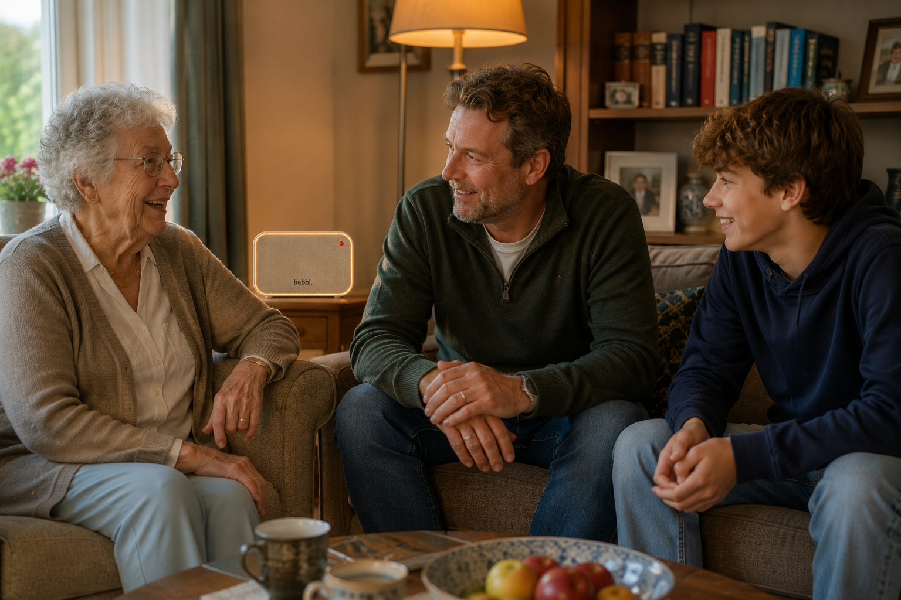

Onze visie
Technologie moet ondersteunen, niet vervangen
Babbl bestaat omdat we geloven dat technologie in dienst moet staan van mensen — niet andersom. Het verhaal achter Babbl.
Kom op de wachtlijst
Babbl bestaat omdat we geloven dat technologie in dienst moet staan van mensen — niet andersom. Het verhaal achter Babbl.
Kom op de wachtlijst
Het aantal mensen boven de 65 groeit elk jaar. Steeds meer mensen wonen alleen en willen zo lang mogelijk zelfstandig thuis blijven. Dat is een wens die we moeten respecteren en ondersteunen.
Zorgorganisaties staan onder druk. Mantelzorgers raken overbelast. Families wonen verder weg. De vraag naar ondersteuning groeit sneller dan het aanbod.
Eenzaamheid onder ouderen is een van de grootste volksgezondheidsproblemen van onze tijd. Sociale verbinding is geen luxe — het is een basisbehoefte.
Technologie lost eenzaamheid niet op. Technologie vervangt geen familie, geen mantelzorger, geen professional. Dat is ook nooit de bedoeling geweest.
Maar technologie kan wel helpen de kloof te verkleinen. Tussen wat mensen nodig hebben en wat beschikbaar is. Tussen ouders en kinderen die ver van elkaar wonen. Tussen een vraag en een antwoord.
Babbl probeert die kloof een klein beetje kleiner te maken. Op een menselijke manier.

Babbl helpt ouderen langer zelfstandig, verbonden en met vertrouwen thuis te wonen.
Zelfstandig, verbonden en met vertrouwen. Dat zijn de drie woorden die alles samenvatten. Niet technologie centraal, maar mensen.
We bouwen Babbl niet in een lab en hopen dan dat mensen het willen gebruiken. We bouwen het samen met de mensen voor wie het bedoeld is.
Ouderen, families, mantelzorgers, zorgprofessionals — zij denken mee over wat Babbl moet kunnen, hoe het moet voelen en wat het beslist niet moet doen.
De ervaring voor de gebruiker is altijd het uitgangspunt. Nooit de technologie.
We ondersteunen, we nemen niet over. Iedere gebruiker blijft de baas over zijn eigen leven.
Vertrouwen verdien je door daden, niet door woorden. Privacy is ingebakken in elk onderdeel van Babbl.
Iedere situatie is anders. Babbl past zich aan, groeit mee en is flexibel naar behoefte.
Zorg is een samenspel. Babbl brengt mensen, families en organisaties dichter bij elkaar.
Iets eenvoudig maken is moeilijker dan iets ingewikkeld maken. Wij kiezen altijd voor eenvoud.
We bouwen Babbl samen. Schrijf u in voor de wachtlijst en word onderdeel van de community die Babbl mede vormgeeft.